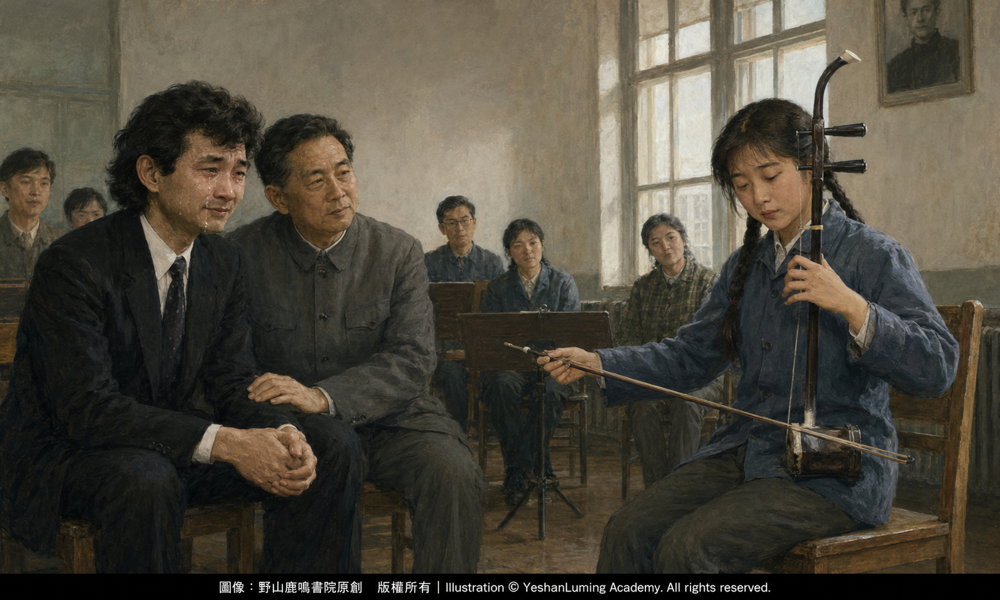

小澤征爾·瞎子阿炳〈二泉映月〉走向世界的重要推手Seiji Ozawa · A Crucial Advocate in Bringing Blind Musician Abing’s The Moon Reflected on the Second Spring to the World
China’s Beethoven · Blind Musician AbingSeiji Ozawa · A Crucial Advocate in Bringing Blind Musician Abing’s The Moon Reflected on the Second Spring to the World
China’s Beethoven · Blind Musician Abing小澤征爾·瞎子阿炳〈二泉映月〉走向世界的重要推手
中國的貝多芬·瞎子阿炳
中國的貝多芬·瞎子阿炳（113）China’s Beethoven · Blind Musician Abing (113)
日本著名的世界級指揮家小澤征爾，1935年出生於當時日本控制下的「滿洲國」奉天市，也就是今天中國遼寧省瀋陽市。
他的父親小澤開作是一名牙醫，曾經長期在中國生活，後來又參與創建日本占領時期的政治組織新民會。小澤征爾幼年時隨家人移居北京，曾居住在新開胡同，直到1944年才返回日本。
因此，小澤征爾雖然是日本人，童年卻有很長一段時間生活在中國。這段特殊的成長經歷，使他從小便接觸中國的語言、社會與文化，也使他後來面對中國音樂時，具有一種不同於一般外國音樂家的親近感與感受力。
1978年6月，在北京中央音樂學院的一間普通教室裡，發生了中國二胡走向世界歷程中極具震撼力的一幕。
當時，17歲的二胡專業學生姜建華，用如泣如訴的琴聲，為來訪的小澤征爾獨奏了阿炳的《二泉映月》。
姜建華演奏時閉著眼睛，完全沉浸在音樂之中，並不知道周圍發生了什麼。當她拉完最後一個音符，睜開眼睛時，驚訝地發現坐在對面的小澤征爾早已淚流滿面，哭得像個淚人一樣。
據時任中央音樂學院院長趙沨後來回憶，小澤征爾在極度感動中，身體不由自主地從椅子上俯了下去，似乎想要跪坐到地上。坐在身旁的趙沨見狀，立即伸手將他拉住。
日本著名的世界級指揮家小澤征爾，1935年出生於當時日本控制下的「滿洲國」奉天市，也就是今天中國遼寧省瀋陽市。
他的父親小澤開作是一名牙醫，曾經長期在中國生活，後來又參與創建日本占領時期的政治組織新民會。小澤征爾幼年時隨家人移居北京，曾居住在新開胡同，直到1944年才返回日本。
因此，小澤征爾雖然是日本人，童年卻有很長一段時間生活在中國。這段特殊的成長經歷，使他從小便接觸中國的語言、社會與文化，也使他後來面對中國音樂時，具有一種不同於一般外國音樂家的親近感與感受力。
1978年6月，在北京中央音樂學院的一間普通教室裡，發生了中國二胡走向世界歷程中極具震撼力的一幕。
當時，17歲的二胡專業學生姜建華，用如泣如訴的琴聲，為來訪的小澤征爾獨奏了阿炳的《二泉映月》。
姜建華演奏時閉著眼睛，完全沉浸在音樂之中，並不知道周圍發生了什麼。當她拉完最後一個音符，睜開眼睛時，驚訝地發現坐在對面的小澤征爾早已淚流滿面，哭得像個淚人一樣。

Click to enlarge
據時任中央音樂學院院長趙沨後來回憶，小澤征爾在極度感動中，身體不由自主地從椅子上俯了下去，似乎想要跪坐到地上。坐在身旁的趙沨見狀，立即伸手將他拉住。
小澤征爾隨後拉著姜建華的手，激動地透過翻譯說：
「這種音樂只應該跪著聽。坐著和站著聽，都是極不恭敬的。」
緊接著，他又說了一句同樣震撼人心的話：
「如果我先聽了這次的二胡獨奏，昨天絕對不敢指揮這個曲目。因為我並沒有真正理解這首音樂，我沒有資格指揮它。」
前一天，小澤征爾曾經指揮中央樂團演奏弦樂合奏版《二泉映月》。然而，當他真正聽到二胡獨奏時，才感受到這首樂曲最深處的悲憫、滄桑與尊嚴。
這就是後來廣為流傳的《二泉映月》「跪聽」公案。
幾十年來，這段往事在中文報刊和網絡上被不斷轉述，有些文章甚至將它演繹成小澤征爾「撲通一聲跪倒在地，長跪不起」。這種寫法雖然具有戲劇性，卻已經超出了現有史料能夠證明的範圍。
比較可信的情況是：小澤征爾在聽完演奏後感動落淚，並做出了俯身欲跪的動作；趙沨及時將他拉住，他也確實說出了「這種音樂應該跪著聽」的話。但是，他並沒有真的跪在地上聽完整首樂曲。
這段歷史真正感人的地方，本來就不在於他的雙膝是否落地，而在於一位享譽世界的指揮家，在瞎子阿炳的音樂面前，放下了自己的身份和權威，坦率承認自己尚未真正理解這首作品，甚至認為自己沒有資格指揮它。
這種坦誠，比任何經過誇張的「驚世一跪」都更有力量。
要理解小澤征爾所說的「跪著聽」，還可以參考中國與日本傳統文化中對跪坐姿態的理解。
在中國人的傳統觀念中，「下跪」往往帶有臣服、乞求、認錯甚至屈辱的意味。因此，當中國讀者聽到一位世界級日本指揮家要向中國民間音樂「下跪」時，很容易將它理解成一種身份高低的逆轉，甚至產生某種獵奇心理。
但是在日本傳統文化中，雙膝著地、臀部坐在腳後跟上的「正座」，並不必然表示卑屈或屈辱。它也是日本人在茶道、花道、傳統戲劇及其他莊重場合中，表示鄭重、專注與尊敬的一種正式坐姿。
有人因此推測，小澤征爾所表達的「跪著聽」，可能帶有接近日本傳統正座的文化含義：不是向誰屈服，而是以最莊重、最虔誠的姿態面對一部偉大的作品。
這種解釋具有一定的文化合理性。但是，目前尚未發現小澤征爾當時講話的日文原始錄音或逐字記錄，因此我們無法證明，他當時使用的日語原詞就是「正座」，也不能斷定現場翻譯把「正座」直接譯成了「跪著聽」。
所以，比較穩妥的理解是：無論小澤征爾當時使用了哪一個日語詞，也無論他想採取何種具體姿勢，他要表達的都不是卑屈，更不是政治性的討好，而是一位真正懂得音樂的大師，在面對一部偉大作品時所產生的敬畏。
那不是一個人向另一個人屈膝，而是一個靈魂向另一個靈魂低頭。
小澤征爾不僅被《二泉映月》深深感動，也由此更加重視姜建華的演奏才能以及二胡這件中國民族樂器的藝術價值。
1978年稍後，在小澤征爾等人的推動下，姜建華應邀前往美國，參加著名的坦格爾伍德音樂節，並先後與波士頓交響樂團、舊金山交響樂團合作。
坦格爾伍德是世界著名的古典音樂中心，也是波士頓交響樂團的夏季演出基地。年僅17歲的姜建華，帶著一把中國二胡登上這個西方古典音樂的重要舞台，本身就具有非同尋常的象徵意義。
二胡不再只是中國民間街巷、戲曲舞台和民族樂團中的伴奏樂器，而是開始以獨奏樂器的身份，走進西方主流古典音樂界的視野。
這並不是說，《二泉映月》在1978年以前從未傳到海外，也不是說小澤征爾憑一人之力把二胡帶到了全世界。但是，他的權威、聲望與真誠讚賞，確實促使西方主流古典音樂界更加認真地認識二胡，也更加認真地聆聽阿炳的《二泉映月》。
此後，小澤征爾一直關注並支持姜建華的藝術發展。姜建華後來前往日本，開展了長達二十多年的二胡演出與教學生涯，培養了大量日本二胡演奏者和愛好者，使這件中國傳統樂器逐漸成為中日文化交流的一條重要紐帶。
1986年，東京三得利音樂廳開幕。在開幕系列音樂會中，小澤征爾指揮新日本愛樂交響樂團，姜建華擔任二胡獨奏，世界首演日本作曲家安生慶創作的二胡與管弦樂作品《風影》。
這場演出是二胡進入日本主流古典音樂舞台的重要標誌。它不再只是作為一件具有異國情調的東方樂器出現，而是開始進入當代作曲家的創作視野，與大型西方管弦樂團展開真正的藝術對話。
小澤征爾的一生，是溝通東西方音樂文化的一座橋樑。
他在西方古典音乐最重要的舞台上取得了巨大成就，卻沒有因此把西方音樂當作衡量一切藝術的唯一標準。當他聽到一位中國盲人民間音樂家留下的作品時，依然能夠放下世界級指揮家的身份，以最敏銳、最坦率的心靈感受其中的苦難、尊嚴與力量。
如果說瞎子阿炳賦予了《二泉映月》不朽的靈魂，姜建華以卓越的演奏賦予它新的生命，那麼，小澤征爾則以自己的聲望、判斷與行動，幫助這部中國民間音樂經典進入更加廣闊的國際音樂世界。
幾十年來，人們反覆談論小澤征爾那一次「驚世一跪」。但是，真正應當被歷史記住的，並不是他究竟有沒有跪到地上，而是他在阿炳的音樂面前流下眼淚，承認自己的不足，並以實際行動支持姜建華和二胡走向國際舞台。
那一刻，已經超越了國籍、地域與文化。
一位早已離開人世的中國盲人民間音樂家，透過一把二胡和一首《二泉映月》，與一位出生在中國、成名於世界的日本指揮家，在音樂中完成了一次跨越時間與國界的靈魂相遇。
這才是《二泉映月》「跪聽」公案最真實、也最動人的歷史意義。
（未完待續）
Seiji Ozawa, the renowned Japanese conductor of international stature, was born in 1935 in Fengtian, then part of the Japanese-controlled “Manchukuo,” in what is now Shenyang, Liaoning Province, China.
His father, Ozawa Kaisaku, was a dentist who lived in China for many years and later helped establish the Xinmin Society, a political organization active during the Japanese occupation. Ozawa moved to Beijing with his family as a young child and once lived in Xinkai Hutong. He did not return to Japan until 1944.
Thus, although Ozawa was Japanese, he spent much of his childhood in China. This unusual upbringing exposed him from an early age to the Chinese language, society, and culture. It also gave him a sense of closeness and receptiveness toward Chinese music that distinguished him from most foreign musicians.
In June 1978, inside an ordinary classroom at the Central Conservatory of Music in Beijing, an extraordinarily moving episode took place in the history of the erhu’s journey onto the world stage.
Jiang Jianhua, then a seventeen-year-old erhu student, performed Abing’s The Moon Reflected on the Second Spring for the visiting Seiji Ozawa, filling the room with music that seemed to weep and lament.
Jiang played with her eyes closed, completely immersed in the music and unaware of what was happening around her. When she drew out the final note and opened her eyes, she was astonished to discover that Ozawa, sitting opposite her, was already streaming with tears, weeping like a heartbroken child.
According to the later recollections of Zhao Feng, then president of the Central Conservatory of Music, Ozawa was so deeply moved that he involuntarily bent down from his chair, as if intending to kneel on the floor. Zhao Feng, who was sitting beside him, immediately reached out and stopped him.
Seiji Ozawa, the renowned Japanese conductor of international stature, was born in 1935 in Fengtian, then part of the Japanese-controlled “Manchukuo,” in what is now Shenyang, Liaoning Province, China.
His father, Ozawa Kaisaku, was a dentist who lived in China for many years and later helped establish the Xinmin Society, a political organization active during the Japanese occupation. Ozawa moved to Beijing with his family as a young child and once lived in Xinkai Hutong. He did not return to Japan until 1944.
Thus, although Ozawa was Japanese, he spent much of his childhood in China. This unusual upbringing exposed him from an early age to the Chinese language, society, and culture. It also gave him a sense of closeness and receptiveness toward Chinese music that distinguished him from most foreign musicians.
In June 1978, inside an ordinary classroom at the Central Conservatory of Music in Beijing, an extraordinarily moving episode took place in the history of the erhu’s journey onto the world stage.
Jiang Jianhua, then a seventeen-year-old erhu student, performed Abing’s The Moon Reflected on the Second Spring for the visiting Seiji Ozawa, filling the room with music that seemed to weep and lament.
Jiang played with her eyes closed, completely immersed in the music and unaware of what was happening around her. When she drew out the final note and opened her eyes, she was astonished to discover that Ozawa, sitting opposite her, was already streaming with tears, weeping like a heartbroken child.
According to the later recollections of Zhao Feng, then president of the Central Conservatory of Music, Ozawa was so deeply moved that he involuntarily bent down from his chair, as if intending to kneel on the floor. Zhao Feng, who was sitting beside him, immediately reached out and stopped him.
Click to enlarge
Ozawa then took Jiang Jianhua’s hand and said emotionally through an interpreter:
“This kind of music should only be heard while kneeling. To listen while sitting or standing would be deeply disrespectful.”
Immediately afterward, he made another equally astonishing statement:
“If I had heard this erhu solo first, I would never have dared to conduct this work yesterday. I did not truly understand this music. I was not qualified to conduct it.”
The previous day, Ozawa had conducted the Central Philharmonic Orchestra in a string-orchestra arrangement of The Moon Reflected on the Second Spring. Yet only after hearing it performed as an erhu solo did he fully encounter the compassion, sorrow, and dignity at the deepest heart of the music.
This was the origin of the widely circulated story of Ozawa “kneeling to listen” to The Moon Reflected on the Second Spring.
Over the decades, the episode has been retold repeatedly in Chinese newspapers, magazines, and online articles. Some accounts have even dramatized it by claiming that Ozawa “dropped to his knees with a thud and remained there.” Such descriptions may be theatrically compelling, but they go beyond what the available historical evidence can substantiate.
The more credible account is that Ozawa was moved to tears after hearing the performance and bent forward as though he were about to kneel; Zhao Feng stopped him in time, and Ozawa did indeed say that “this kind of music should be heard while kneeling.” But he did not actually kneel on the floor throughout the performance.
What makes this episode truly moving is not whether his knees ever touched the floor. It is that a world-renowned conductor laid aside his status and authority before the music of blind Abing, openly acknowledged that he had not yet truly understood the work, and even declared himself unqualified to conduct it.
Such candor is far more powerful than any exaggerated tale of an “astonishing act of kneeling.”
To understand Ozawa’s statement that the music should be “heard while kneeling,” it is also helpful to consider how kneeling postures are understood in traditional Japanese culture.
In traditional Chinese thinking, kneeling often carries connotations of submission, supplication, confession, or even humiliation. Therefore, when Chinese readers hear that a world-famous Japanese conductor wished to “kneel” before Chinese folk music, they may easily interpret it as a reversal of status and hierarchy, or even approach the story with a certain fascination for the sensational.
In traditional Japanese culture, however, seiza—a posture in which one kneels with the buttocks resting on the heels—does not necessarily signify abasement or humiliation. It is also a formal sitting posture used to express solemnity, attentiveness, and respect during the tea ceremony, flower arrangement, traditional theater, and other dignified occasions.
Some people have therefore suggested that Ozawa’s reference to “kneeling to listen” may have carried a cultural meaning close to that of traditional Japanese seiza: not submission to another person, but facing a great work of art in the most solemn and reverent manner possible.
This interpretation has a certain cultural plausibility. However, no original Japanese recording or verbatim transcript of Ozawa’s remarks has yet been found. We therefore cannot prove that the Japanese term he used was seiza, nor can we conclude that the interpreter directly translated seiza as “kneeling to listen.”
The most prudent interpretation, then, is this: regardless of the exact Japanese word Ozawa used, and regardless of the precise posture he intended to adopt, he was expressing neither humiliation nor political flattery. What he expressed was the awe of a master who truly understood music when confronted with a magnificent work of art.
It was not one person bending the knee before another. It was one soul bowing before another soul.
Ozawa was not only profoundly moved by The Moon Reflected on the Second Spring. The experience also deepened his appreciation of Jiang Jianhua’s musical gifts and of the artistic value of the erhu as a Chinese traditional instrument.
Later in 1978, with the support of Ozawa and others, Jiang Jianhua was invited to the United States to participate in the renowned Tanglewood Music Festival and subsequently collaborated with the Boston Symphony Orchestra and the San Francisco Symphony.
Tanglewood is one of the world’s best-known centers of classical music and the summer home of the Boston Symphony Orchestra. For Jiang Jianhua, then only seventeen years old, to carry a Chinese erhu onto this important stage of Western classical music was in itself an event of extraordinary symbolic significance.
The erhu was no longer merely an accompanying instrument heard in China’s streets, traditional opera theaters, and Chinese orchestras. It was beginning to enter the awareness of the mainstream Western classical music world as a solo instrument in its own right.
This does not mean that The Moon Reflected on the Second Spring had never reached audiences overseas before 1978, nor does it mean that Ozawa single-handedly brought the erhu to the entire world. Nevertheless, his authority, reputation, and sincere admiration did encourage the mainstream Western classical music world to take the erhu more seriously—and to listen more attentively to Abing’s The Moon Reflected on the Second Spring.
In the years that followed, Ozawa continued to take an interest in and support Jiang Jianhua’s artistic development. Jiang later moved to Japan, where she devoted more than twenty years to performing and teaching the erhu. She trained and inspired large numbers of Japanese erhu players and enthusiasts, gradually transforming this traditional Chinese instrument into an important bond of cultural exchange between China and Japan.
In 1986, Suntory Hall opened in Tokyo. As part of its inaugural concert series, Ozawa conducted the New Japan Philharmonic, with Jiang Jianhua as erhu soloist, in the world premiere of Japanese composer An Shengqing’s Wind Shadow, a work for erhu and orchestra.
This performance marked an important step in the erhu’s entry into Japan’s mainstream classical music world. The instrument no longer appeared merely as an exotic curiosity from the East. It began to enter the creative vision of contemporary composers and to engage in a genuine artistic dialogue with large Western symphony orchestras.
Seiji Ozawa’s life formed a bridge between the musical cultures of East and West.
He achieved immense success on the most prestigious stages of Western classical music, yet he never treated Western music as the sole standard by which all art should be judged. When he heard a work left behind by a blind Chinese folk musician, he was still able to set aside his identity as a world-famous conductor and, with the greatest sensitivity and candor, experience the suffering, dignity, and strength within it.
If blind Abing gave The Moon Reflected on the Second Spring its immortal soul, and Jiang Jianhua gave it new life through her superb performance, then Seiji Ozawa, through his reputation, judgment, and actions, helped this Chinese folk-music classic enter a far broader international musical world.
For decades, people have repeatedly spoken of Ozawa’s “astonishing act of kneeling.” Yet what history should truly remember is not whether he actually knelt on the floor, but that he shed tears before Abing’s music, acknowledged the limits of his own understanding, and took concrete action to support Jiang Jianhua and the erhu as they entered the international stage.
That moment transcended nationality, geography, and culture.
Through an erhu and a single piece of music, The Moon Reflected on the Second Spring, a blind Chinese folk musician who had long since departed this world encountered, in music, a Japanese conductor who had been born in China and risen to fame across the globe. It was a meeting of souls that transcended both time and national borders.
This is the truest and most moving historical meaning of the story of “kneeling to listen” to The Moon Reflected on the Second Spring.
(To be continued)